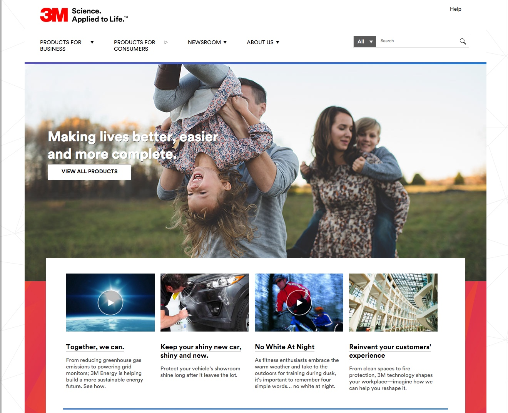
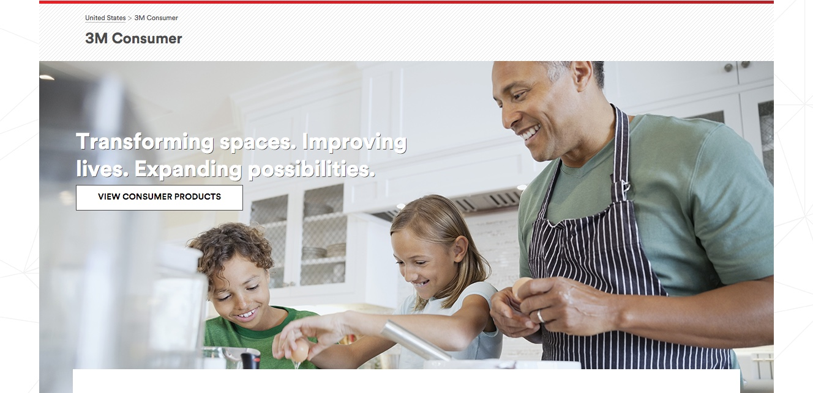
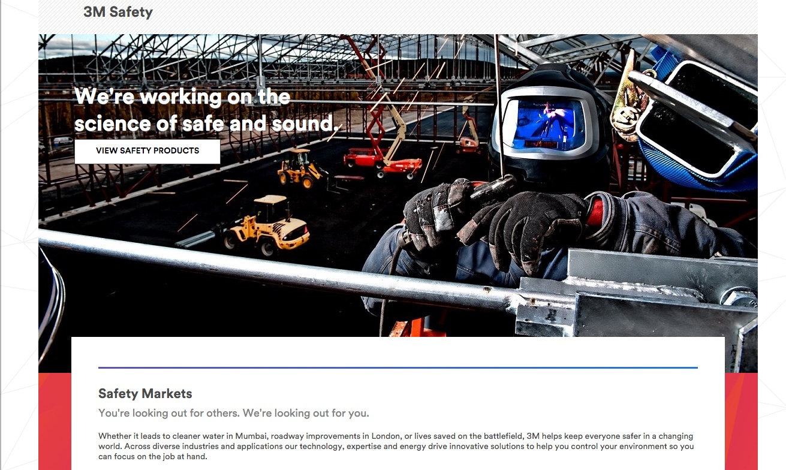
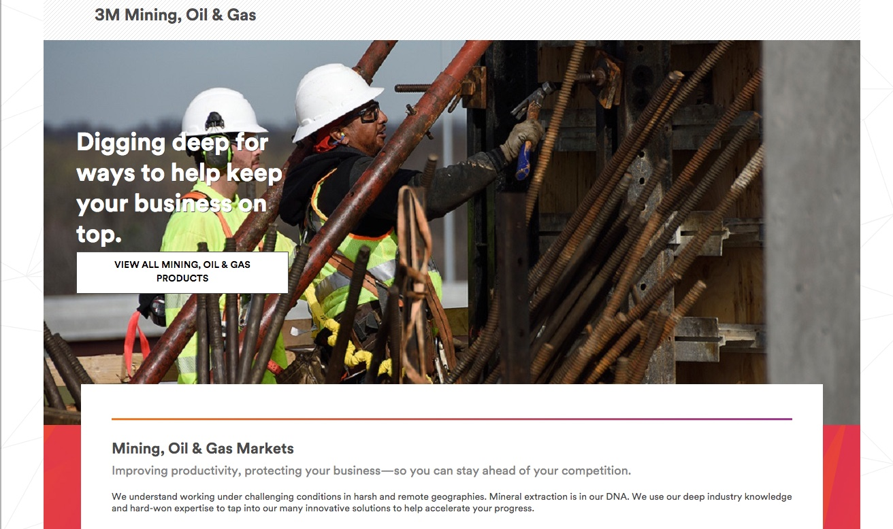
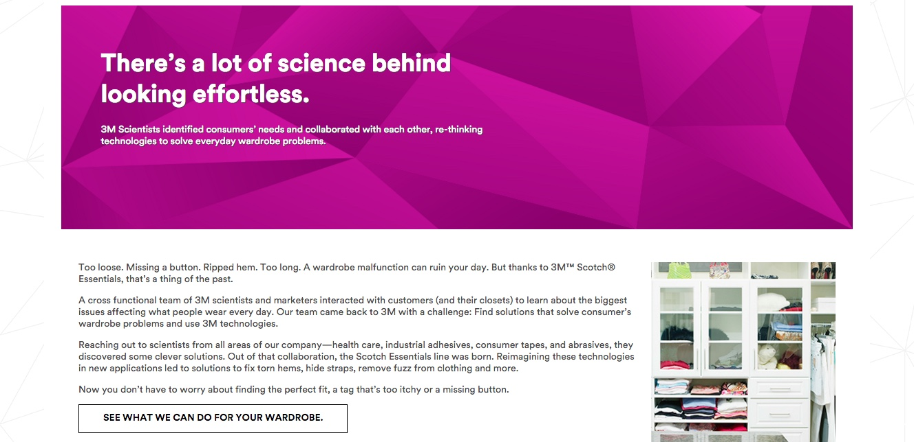
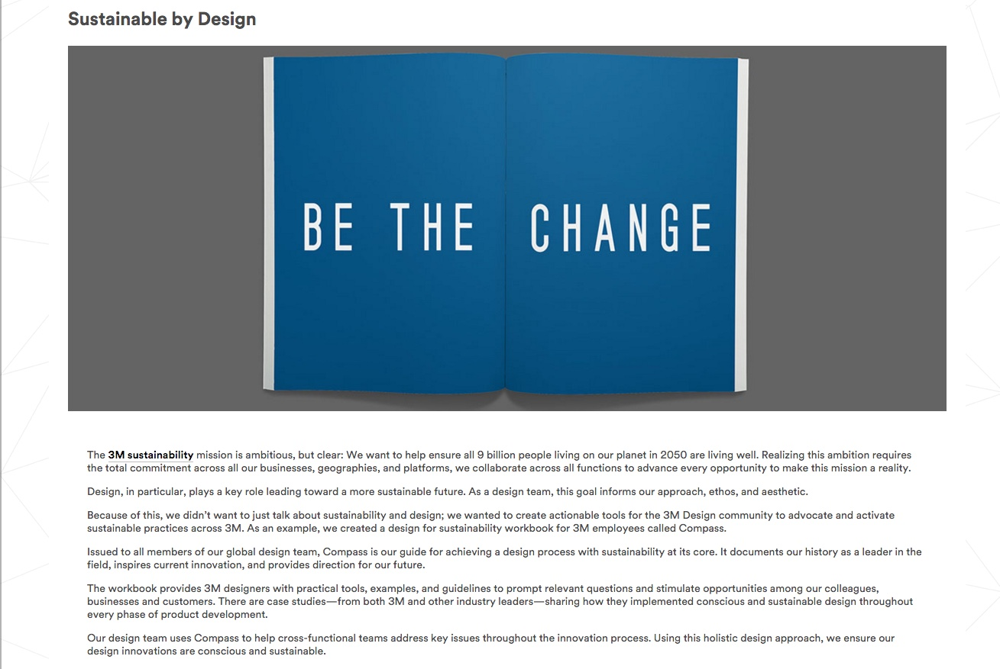

3M Digital Content

3M.com after the rewrite
Brand platforms are only as good as the work that follows. After helping launch 3M Science. Applied to Life™, 3M needed a base of content to pull that new voice through all five business groups and prove the promise in the real world.
Corporate innovation stories usually fall flat. Because they're dry and overly focused on elements the audience doesn't care about.
Working with BBDO Minneapolis, I tackled two major digital writing projects. First was all the copy for the newly redesigned 3M.com, establishing a consistent voice across all five business divisions, as well as special initiatives in design, sustainability, and recruiting. Alongside that site-wide overhaul, I wrote a library of 200+ short feature stories — called Particles — translating complex technology into real-world value.




